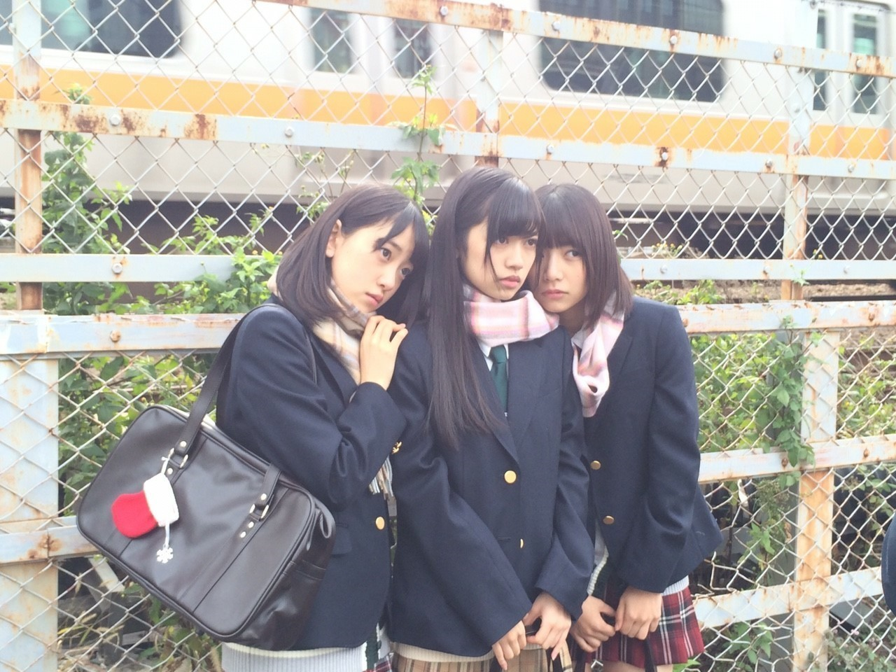
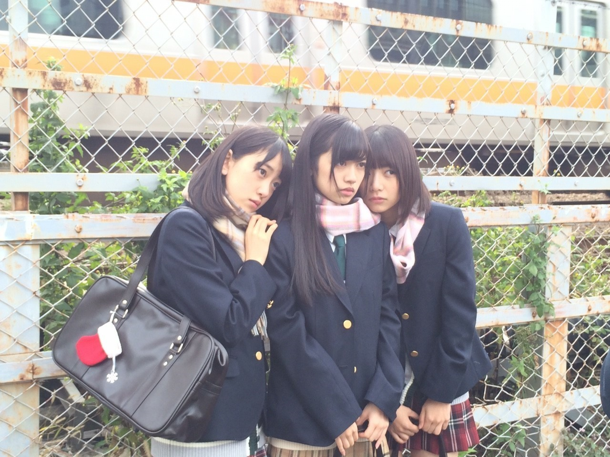

2020/1201Tue2020
ブログを作成しているときに
今日も1日お疲れ様でした。
12月も何卒です。✨

最後に最近の私を
2021年だと勘違いして書きそうになった
自分が居ました、、、
まだ、2020年らしい
12月になりました。
毎日バタバタしていますが
落ち着いてそして健康と安全第一に
今年も沢山思い出に残るような事をしたいです。✨
じゅんなお誕生日おめでとうだったー。✨
まだまだ、不安な日々が続きますが
手洗いうがいこまめな消毒
マスク
暖房なども大切ですが
自分が居ました、、、
まだ、2020年らしい
12月になりました。
毎日バタバタしていますが
落ち着いてそして健康と安全第一に
今年も沢山思い出に残るような事をしたいです。✨
じゅんなお誕生日おめでとうだったー。✨
まだまだ、不安な日々が続きますが
手洗いうがいこまめな消毒
マスク
暖房なども大切ですが
換気もこまめに。！
自粛で体力も落ちていると思うので
無理せずです。！
えいえいおー。
みおなについてはモバメやInstagramでも
触れました。
モバメではブログや他のSNSでは書けないような
意見を思うままに書きました。
ブログもどんな言葉を綴ればいいのか
すごく悩みました。
多くを語っても
自分以外の人に伝わる、伝えられる部分は
ほんと僅かだなと感じることが沢山ありますが
それでも、想いを書きました。
今、1番伝えたい、届けたい事は
いつか振り返ったとき
いい思い出になるように。
決まった以上その中で最高を目指したいです。
何より残りの短い時間
出来るだけそばに居たいです。
そばにいれるチャンスやタイミングが沢山増えるよう
ファンの皆さんと声を大きくして
活動したいです。
私の気持ちです。
自粛で体力も落ちていると思うので
無理せずです。！
えいえいおー。
みおなについてはモバメやInstagramでも
触れました。
モバメではブログや他のSNSでは書けないような
意見を思うままに書きました。
ブログもどんな言葉を綴ればいいのか
すごく悩みました。
多くを語っても
自分以外の人に伝わる、伝えられる部分は
ほんと僅かだなと感じることが沢山ありますが
それでも、想いを書きました。
今、1番伝えたい、届けたい事は
いつか振り返ったとき
いい思い出になるように。
決まった以上その中で最高を目指したいです。
何より残りの短い時間
出来るだけそばに居たいです。
そばにいれるチャンスやタイミングが沢山増えるよう
ファンの皆さんと声を大きくして
活動したいです。
私の気持ちです。
今日も1日お疲れ様でした。
12月も何卒です。✨

最後に最近の私を
これお気に入りの制服です。
繁体字版の制服可愛いですよね。
乃木恋やってる人ー。？？
良かったらちょっとした時間にやってみて下さいね。✨
2020/12/01 18:30


コメント(323)
健康に気をつけてください！
ミーグリやります!
前髪なしもやっぱいいね！
アンダラ絶対行きます！
ミーグリやります！
蘭世に会いに行きます！
林瑠奈ちゃんのコラムが始まりましたね
林瑠奈ちゃんが蘭世の跡を継ぐ感じが出てきて嬉しい！
もっと色々なメンバーに絡む蘭世が見たいです！
いつもありがとう
ユースケ
そうだね。
まだ2020年1ヶ月残ってるからね。
今年も 早かったよねー。
ーーーー
メンバーの卒業はさみしいけど、やっぱり同期ともなるとよりさみしく感じるのでは？
苦楽を共にした同期だもんね。
みおなの卒業とても寂しくなりますね…
残り少ない時間を大切にしてください。
制服蘭世めっちゃ可愛いですね！
あと、乃木恋やってるよ〜
もちろん蘭世選んでイベント回ってまーす！
この数日で、たくさん思ったことがあって、胸がいっぱいになったけど、モバメとかで蘭世の気持ちも聞けて安心しました、、、
アンダーライブも決まったね！
絶対行くから待ってて！
ミーグリ26thも参加させてもらいます、、、！
今シングルもよろしくお願いします。！
蘭世もいつか卒業する時が来るけど、その時まで
たくさんたくさん後悔しないようにたくさん会いに行くし、お話しする！
いつもたくさんありがとう！
幸せをありがとう！
ここらから大好きです！
もうすぐ終わる2020年もありがとう！
お手紙出したからよかったら読んでください☺️！
あいら。
未央奈ちゃんの卒業も…
同じ2期の同期として楽しかった思い出､苦しかった思い出たくさんあるよね…
頑張ってきた同期だから､明るくお見送りしよう
まだ2020年ですよ〜
でも時々年とか分からなくなる時
あるよね笑
今後のブログも楽しみに待ってます！
体調には気をつけてね！
応援してます！
大好きです♡
乃木恋やってます！
らんらんもやってるのかな？？
蘭世先生の未央奈さんへの想いは本当に感動しました。
でも、蘭世先生が伝えたいことが全部自分に伝わってないのかな〜と思っています……
乃木恋やってますよ！！
蘭世先生が推しメンです。
広島住みの璃音
全然会えない時期に卒業は悲しい！
蘭世にも早く会いたいー！
もう１２月って早いですよね。もうすぐ２０２０も終わってしまいますよ～～～。
まだまだ気を緩めずしっかり感染対策していきます
インスタやモバメでも未央奈へのメッセージとてもよきよきでした～
乃木恋やってますが最近起動がおろそかになってきました(´；ω；`)ｳｯ…
まだまだ蘭世は制服似合いますねー
未央奈の卒業が決まったのは発表の仕方もあって本当にびっくりしました。蘭世は特に未央奈と過ごす時間が長いメンバーだよね。それなのに、すぐに決まったことをしっかり受け入れて、前向きになれるところ尊敬します。
でもやっぱり寂しくなることはあると思います。適度に深呼吸してね。
蘭世が想像してる遥かに多くのひとが全力で支えてるはずです！
未央奈と悔いなく一緒にいてください。
最後に純奈お誕生日おめでとう〜〜〜！！！！
なんて言葉がありますが、
そんなはずはないんだ！！
って蘭世の発信する言葉を浴びる度に
感じています(^^)
未央奈にため、蘭世のために
声上げていこうな(^o^)
♪私のために 誰かのために
が、沁みますわ(〃ω〃)
だいぶ寒くなってきましたが、
お身体に気をつけて
えいえいおー♪( ´θ｀)ノ
2020年、思い描いていた1年とは大きく違った1年でした。
たぶんみんながそう思ってるはず。
残り1ヶ月も健康に楽しく過ごしましょうね☺️
えいえいおー！
純奈ちゃんおめでとうだー！
メールも読みましたが、蘭世ちゃんの想い伝わってるよ。
とにかく、限られた時間を有意義なものに、
振り返った時に笑い合えるような時間にしてほしいと思います☺️
12月も頑張ろうね！
暗髪蘭世ちゃん好きーーー♡
まだ2020年です笑
でも今年は特別長く感じましたね
ようやく2020年が終わるって感覚です
未央奈の卒業、悲しいですし、悔しいです
でもいくら嘆いても元には戻らないから
今できることを精一杯やっていきます
純奈おめでとうだー！
コロナもインフルも気をつけて良い年末を送りましょう
大好きです
ユウキ
堀ちゃんとの写真、あたたかい！
制服写真、お似合いすぎです！
アンダラ、楽しんでくださいね！
未央奈との時間を大切に過ごしていきたいですね。
12月もよろしくね！
最近はモバメやインスタでよく見るようになったのでブログ疎かにしてた。ペコリ。m(__)m。
アンダーライブ開催決定、良かった。
当たると良いが最低限ライブ配信はある様なので安心して3日間過ごせます。そして、生誕Tシャツも着れる。良き良き。
楽しみにしているので稽古頑張ってください。
ではでは。
ほんとに一年あっという間すぎるし、時間感覚が無くなってきますよね(笑)
残り一ヶ月、2020年お願い致します〜！
2021年というと、ミーグリ！！！！
発表されましたね（ ; ; ）
もう嬉しすぎて…私前回のシングルで
券がなくて全く参加できなくて
寺田さんに話したいことは沢山あるのに
出来ないもどかしさにモヤモヤしてた毎日でした（ ; ; ）
だから本当に感謝です、、、ありがとう
応募します、沢山たくさん、お話しましょう！！
同期の卒業はまた別の感情があるし
色んな想いがありますよね
でもやっぱりファンとして前向きに送り出したいです
残りの時間、どうかたくさんの幸せで溢れますように
えーーーー制服姿珍しい！！
乃木恋、しばらく開いてない…
再開しようかな？？♡
一応アンダー彼氏まではいってますよ
今日はこの辺で
ではまた！！！
すきやーーーーーー
ゆうき(ゆっちゃん)
最近の蘭世の姿が見れて安心するから、蘭世の更新は毎回楽しみにしてるよ*\(^o^)/*
ホント何着ても似合う蘭世が好きだし、ずっと見てたいわ(*´∇｀*)
また、寂しくなるな。
まだ2020年だけど、もうそろそろ2021年なりそうですね
12月は忙しいと思いますが蘭世さんも体調にはお気をつけて頑張ってください！！
じゅんなさんおめでとうです！！
どう伝えても伝わらないことや、間違って伝わることもありますよね
今までにない発表だったので戸惑いを隠せませんでしたが、最後まで悔いのないように応援していきたいです
もちろん蘭世さんのモバメやインスタの言葉は伝わってますよ！！
今日から12月で寒くもなってきましたが、何卒よろしくお願いします！
今回の1曲！
ナナヲアカリさんで｢オトナのピーターパン｣！
大人にはなったけどなかなか大人になりきれなくて、子供ままでいたいけどそうもいかない、大人になったからこそ刺さる曲だと思います！
難しいことだと思いますけど、少しずつ大人になるしかないんだなと改めて思いました、
乃木恋やってますよ！
彼氏目指してるけど、なかなか難しいです…気長に頑張ります！
蘭世これからも頑張ってね！
応援する！
未央奈の卒業発表は正直驚きと動揺を隠せませんでした。いつも二期生の先頭を走ってくれていたので、残りの時間を大切にして、沢山の有り難うを伝えたいと思います。
気付けば12月ですね。
「未央奈は12月になると、桃を置く」
これ覚えてますか。？
またコメントしますね。
あ、新しいこと、どんなことであれ応援してますよ。
2020年も蘭世にとても元気もらいました！
残った12月と2021年もミーグリとかでよろしくお願いします！！
まってぃん（りょうた）より
乃木恋やってますよー
ブログ更新ありがとう！
まだ2020年よ〜
まだ今年を楽しませて〜
純奈おめでとうだったね！
純奈も蘭世もどんどん綺麗になって、どんどん大人になって、
嬉しいような寂しいような感じです笑
未央奈ね、正直まだ気持ちの整理がついてないけど、限られた残りの時間、素敵な時間にしてくださいね！
12月もがんばっていきましょー！
乃木恋やってまーす！
そこそこしっかりやってまーす！
それでは！
ありがとうございました！
応援してます！
こないだはオールナイトニッポンお疲れさまでした。その後もお仕事だったようですがよく休めたかな？
モバメもありがとー♪インスタのストーリーとかも見てますよー。
アンダラ開催おめでとう♪
とても楽しみですが北海道から行くのは色々まだ危険なのと、ボクの仕事のお客さんはお年寄り多いので今回は配信で観ます！
遠くからですが応援してるので頑張ってくださいねー。
らんらんは個人のアイドル寺田蘭世、乃木坂のメンバー、そして乃木坂の２期生という面があって、同じようでもそれぞれ少しずつ違うと感じてます。
特に２期生のメンバーは苦楽を共にしてきた家族以上の特別な絆があると思うので、同じ２期が卒業するのはとても喪失感があるのではないかと勝手に想像してます。
時間は概念とは言いますが、有限であることを認識すれば有意義に使うことができると考えます。
どうぞ未央奈ちゃんとの残された時間、目一杯よい思い出を更に作っちゃってくださいね。
やぁ
ブログ更新ありがとう！
今日のメールのお返事は一個前のブログに反映されてたわ。
いやいやまだ2020年やであと一ヶ月あるで笑
師走！
忙しいだろうけど、ホンマ安全健康第一やで！！
で楽しみながら思い出をな！
純奈ちゃんおめでとう！
せやな。
慣れて来るからこそしっかりと個人で対策出来る事はしないとな。
軽い運動もやらないとな。ストレッチとか
お互いに気を付けよう！
えいえいお～ヾ(≧▽≦)ﾉ
そうやな想いの伝え方伝わり方はホンマ僅かだし違った伝わり方もする時だってあるもんあん。
難しいわ。
あとどのくらいの時間を乃木坂で一緒に過ごせるかは分からないけど、蘭世
蘭世
こちらこそ12月も何卒～
ミーグリに関しては前も書いたままも気持ち。
でもそろそろ心を変えていかないといけないのかなとも思ってる。
だってこれで最低でも4月まで実際に逢えるイベントがないわけだからな…
まぁこんなんご時世だから当たり前なんだろうけど。
まぁもう少し悩むわ。
良き写真。
てか最近もこの服着て撮影したんや！Σ(ﾟДﾟ)
黒髪がよく似合う。
やっぱ俺は蘭世
ってミーグリの事書いてたらメール来た笑
メ―ルありがとう！
ミーグリな…
経験したことない笑
まぁ理由は前に書いたけど。
確かに実際に逢って話すのとは違うから人見知りななくなるだろうな。
まぁ良い面は沢山あるだろうな。メンバーや蘭世
握手会は結構負担が大きいと思うから。
そう考えると良いのかなとも思うけど。
後は自分の心次第かな。
蘭世
きっとまた後で(｡･ω･)ﾉﾞ
いんすたもモバメも沢山ありがとう
未央奈卒業はかなりびっくりだったし、ショックだったよ。。。
でもみんないつかは卒業していくという事を実感し、今できる事を最大限楽しまなきゃなと思いました！
アンダラも申し込んだよ！
握手会もライブもまだ行ったことがないから、抽選当たるの祈りまくってます
蘭世もまだまだ体に気をつけて頑張ってね！
あと2期生ライブ開催してくれるの祈ってます！
乃木恋やってますよ〜
蘭世の紡ぐ言葉はどれも力がこもってて凄く好きです。
みおなと最後の最後まで笑顔で楽しくいたいし、笑ってる姿たくさん見たいです！
これからもっと寒くなるけど体に気をつけて無理せずがんばってねー
先程オンラインミートアンドグリートが発表されてワクワクしております。✨
またたくさんお話しできればと思います。
未央奈の卒業は急すぎて動揺しました。
これまで2期生の先頭を走り続けてきた大切な人が遠くへ行ってしまう辛さは想像もつきません。モバメを見て改めて蘭世さんの想いが聞けて嬉しかったです。多分SNSの更新頻度は未央奈と蘭世さんがトップなのではないでしょうか？やっぱり似ていますよね。蘭世さん1人で未央奈の想いを背負い込まないでくださいね。もちろん2人だけの約束には力を添えることはできませんが、できることがあればみんなで頑張りましょう。！FUNKY MONKEY BABYSの曲で「この笑顔は何倍にもなるし、その涙は2人で÷2大きな夢は明日に託し、歩いて行こう」という歌詞があります。ファンと蘭世さんで頑張れば辛いことも何万分の1にもなるし、笑顔は何万倍にもなります。一緒に苦しんで一緒に笑いましょう。
まずはアンダラですね。現地にはいけなさそうですが、画面の向こうで応援しています。たまちゃんセンターで新しい風が吹きそうですね。ただ、2期生だって負けてないですよね。めちゃくちゃに輝く6人に期待しています。(もちろんみんなに期待してます！)
それではまた！
制服可愛かね！こげん大人っぽくて可愛い蘭世ちゃんが高校とかおったら告白されまくりやね〜笑
寒くなってきたけん、体調には気をつけんしゃいよ。
健康が一番やけんね。
これからも未央奈と、みんなと、楽しく過ごしてくださいね
風邪ひかないように気をつけてください！
ちなみに乃木恋、ちょうど蘭世で頑張ってるとこです。笑
モバメも沢山送ってくれて本当にありがとうね
蘭世と未央奈のコンビ好きだから悲しいけど
蘭世が前に進んでいるので、僕達ファンも
前に進みます。
乃木恋やってみようか考え中です。
気分はもう2021年！？
2020年もあっという間でしたよね〜
今年は特にいつもとは違う一年になりましたね。
じゅんなちゃんお祝いですね！
おめでたいです！
堀ちゃんへの思い、読ませて頂きましたよ。
堀ちゃんは2期生の中でも最初に先輩たちの間に入っていって、新たな道を切り開いてくれましたよね。
彼女も沢山の葛藤があったはずです。
それでも自分の色を出して、2期生みんなの事を思っていて…
本当に素敵な存在です。
特に堀ちゃんはじめ、これまでの卒業メンバー含めたサンクエトワールは私の最も好きなユニットの一つです。
「大人への近道」を聴くたびに今でもメンバーの事を思い出してしまいます。
蘭世さんには尚更感じるものがあると思います。
残り限られた時間、思い残す事のないように一緒に過ごして下さい！
ペチペチするのも良いかもしれませんね笑
乃木恋、やってますよ〜
もちろん蘭世さん！！
これからも応援してます！
コメントする